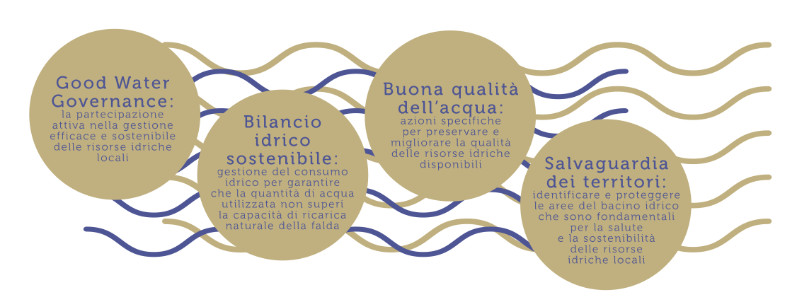
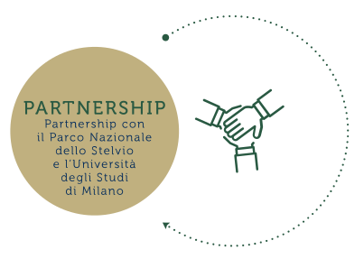
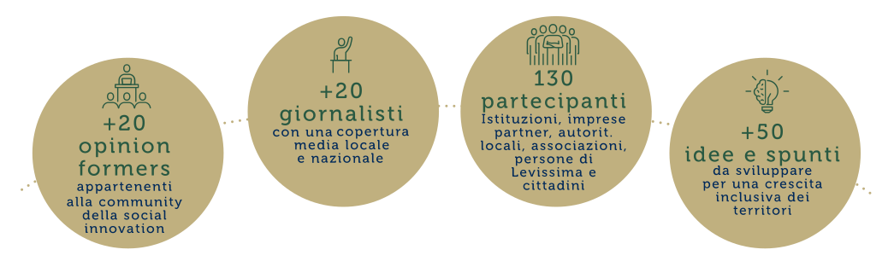

Sanpellegrino gestisce il ciclo industriale dell’acqua nel pieno rispetto delle leggi nazionali, mantenendo costante l’equilibrio tra prelievo e ricostituzione della falda.
La tutela della risorsa acqua all’interno del proprio territorio di appartenenza va oltre il rispetto normativo, perché l’azienda è consapevole di quanto inscindibile sia la relazione fra purezza incontaminata del territorio e sostenibilità delle proprie attività nel tempo.
Alliance for water stewardship
La certificazione Alliance for Water Stewardship è lo standard di riferimento internazionale per promuovere la gestione sostenibile della risorsa acqua nel mondo. Lo standard AWS guida, riconosce e premia il raggiungimento di best practices in quattro aree chiave:
Il Gruppo Sanpellegrino ha aderito a questa iniziativa nel 2017 partendo dalla fonte di Santa Rosalia del sito produttivo di Santo Stefano Quisquina (AG). Entro il 2025 l’azienda coinvolgerà il resto degli stabilimenti dove vengono imbottigliate le acque minerali.
Le comunità locali
Il Gruppo Sanpellegrino da sempre sviluppa una profonda relazione con i territori in cui opera.
L’imbottigliamento di acqua minerale è un’attività che, in quanto non delocalizzabile, crea valore nelle comunità locali, generando ricadute positive in chiave economica, ambientale e sociale.
IL COMMUNITY RELATIONS PLAN 2017
L’ascolto delle comunità in cui operiamo è fondamentale per comprenderne le esigenze e, conseguentemente, realizzare investimenti e progetti efficaci in una prospettiva di reciprocità.
L’efficacia della relazione con le comunità è valutata attraverso il LAI, Local Acceptability Index, che indica il giudizio espresso dalla Comunità sull’azienda considerando gestione dell’acqua, impatto sull’ambiente e sviluppo socio-economico.
LOCAL ACCEPTABILITY
INDEX
UNA FABBRICA CONDIVISA PER L’ALTA MONTAGNA
A partire dal 2017, Levissima ha intrapreso il rinnovamento dello stabilimento di Cepina Valdisotto investendo 30 milioni di euro, con l’obiettivo di renderlo più moderno, competitivo e adeguato alle crescenti esigenze di Levissima.
Il progetto è pensato insieme alle persone di Levissima e alla comunità per realizzare una “Sharing Factory” capace di integrare i bisogni degli individui, interagendo con stakeholder locali e nazionali.
Alcune aree dello stabilimento diventeranno un luogo aperto ai progetti di sviluppo territoriale e protezione ambientale. Altri spazi, invece, mostreranno ai visitatori le ricchezze del territorio, a partire dall’offerta naturalistica e turistica del Parco Nazionale dello Stelvio.
un laboratorio per progettare il futuro, insieme
Il 29 novembre 2017 Levissima ha inaugurato un laboratorio territoriale chiamato Aim Higher Lab, per co-progettare con attori locali e nazionali un percorso di crescita verde e inclusiva, che metta al centro la Sharing Factory, ma contribuisca anche a mobilitare tutte le risorse del territorio per il turismo sostenibile, il welfare di comunità, lo sviluppo tecnologico e l’innovazione.
LEVISSIMA 3000
Il 16 ottobre 2018 Levissima ha portato più di 100 persone a 3000 metri, per condividere il percorso svolto fino a quel momento e definire insieme i prossimi passi. In quella occasione è stato presentato Levissima 3000: uno chalet a 3000 metri d’altezza che si affaccia sulle montagne del Parco Nazionale dello Stelvio e da dove si scorge Cima Piazzi, la montagna da cui ha origine l’acqua minerale Levissima.
Il brand ribadisce così la sua volontà di contribuire attivamente alla valorizzazione del territorio.
Il progetto ghiacciai Levissima
Un team di ricercatori dell’Università degli Studi di Milano si dedica da oltre 10 anni allo studio della superficie dei ghiacciai italiani con il sostegno di Levissima. Tutti i dati raccolti attraverso immagini da satellite e foto aeree sono confluiti nel “Nuovo Catasto dei Ghiacciai Italiani”, il punto di riferimento più aggiornato sullo stato di salute dei 903 ghiacciai presenti nel nostro Paese.
2 stazioni metereologiche automatiche permanenti sul Ghiacciaio dei Forni: dal 2014 hanno permesso all’Italia di essere inserita in network internazionali dell’Organizzazione Meteorologica Mondiale e del programma Horizon 2020.
Strumentazione in Val Dosd. (stazione meteo a valle, sul ghiacciaio e idrometro nel torrente Dosd.).
8 sensori per la misura della temperatura della roccia installati su Cima de Piazzi: dal 2010 permettono di studiare il permafrost e la degradazione della roccia. 1 drone dal 2014 permette di eseguire periodici rilievi sul fronte e sulla superficie del ghiacciaio.
Pubblicazione dell’Atlante dei Ghiacciai Italiani.
18 ricercatori coinvolti.
20 pubblicazioni scientifiche di alto livello ogni anno.
Dal 2016 la vendita del braccialetto Everyday Climbers sull’e-commerce finanzia il progetto. 5/6 tesi di laurea all’anno e alternanza scuola lavoro con decine di studenti di licei su tematiche glaciologiche e climatologiche d’alta quota.
Partecipazione al dibattito europeo (2017: Helsinki e Smolenice), condivisione di metodologie e dati, definizione di protocolli e linee guida. Nel 2017 i ricercatori hanno partecipato alla seconda campagna del principale progetto europeo basato in Islanda. 1 scuola internazionale sulla misura e modellazione della neve (Bormio, Marzo 2018).
le materie prime
La qualità delle bibite Sanpellegrino dipende dalle materie prime utilizzate e dalla volontà di dare al consumatore un prodotto di qualità con una lista ingredienti il più possibile corta.
Per questo, Gruppo Sanpellegrino ha anticipato fin dal 2015 la normativa italiana che oggi consente solo alle bibite che hanno più del 20% di succo ad essere definite ‘aranciate”.
Anche la selezione e la scelta dei fornitori è fondamentale. Essi sono valutati secondo quattro pilastri: standard di lavoro, salute e sicurezza, trasparenza ed etica del business e ambiente.